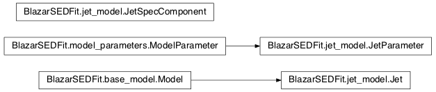

Module: jet_model¶
Overview¶
This module provides an interface to call the BlazarSED code, setting the physical parameters and running the code. The BlazarSED code is a numerical accurate C code, to evaluate SSC/EC emission processes in a relativistic jet. The python wrappper is built using SWIG.
The Jet is used to create a jet object, providing the high
level interface to set the jet physical paramters, and evaluater the SSC/EC
emission processes.
Classes relations¶

Classes and Inheritance Structure¶
Module API¶
Summary¶
JetParameter(blob, **keywords) |
This class is a subclass of the ModelParameter class, |
Jet([name, electron_distribution, …]) |
This class allows to build a jet model providing the interface to the BlazarSED code, giving full access to the physical parameters and providing the methods to run the code. |
Module API
-
class
BlazarSEDFit.jet_model.Jet(name='test', electron_distribution='lp', beaming_expr='delta', jet_workplace=None, verbose=None, clean_work_dir=True, **keywords)[source]¶ Bases:
BlazarSEDFit.base_model.ModelThis class allows to build a
jetmodel providing the interface to the BlazarSED code, giving full access to the physical parameters and providing the methods to run the code. AJetobject will store the the physical parameters in theModelParameterArrayclass, that is a collection ofJetParameterobjects.Parameters: - name – (str), name id for the model
- electron_distribution – (str), the type of electron distribution
Variables: parameters – instance of the
ModelParameterArraystoring and handling the array ofJetParametersinstancesExamples
import BlazarSEDFit as SEDFit """ create a Jet object, named "test" , with a "lppl" electron distribution """ myJet=SEDFit.Jet('test','lppl') myJet.parameters.show_pars() myJet.eval() myPlot=SEDFit.Plot() myPlot.add_model_plot(myJet,autoscale=True) myPlot.save('jet.png') """ chante the value of the 'gamma0_log_parab' parameter """ myJet.set_par('gamma0_log_parab',val=1.0E5) myJet.eval() myPlot.add_model_plot(myJet,label='gamma0_log_parab=1.0E5') myPlot.save('jet1.png')
-
add_par_from_dic(model_dic)[source]¶ add the
JetParameterobject to theModelParameterArrayusign the dictionaries built by thebuild_emitting_region_dic()andbuild_electron_distribution_dic()
-
eval(init=True, fill_SED=True, nu=None, get_model=False, loglog=False, plot=None, label=None, phys_output=False)[source]¶ Runs the BlazarSED code for the current JetModel instance.
Parameters: init – (boolean), “defualt=True” initializes the BlazarSED code for the current Jet instance parameters values.
-
set_par(par_name, val)[source]¶ shortcut to
ModelParametersArray.setmethod set a parameter valueParameters: - par_name – (srt), name of the parameter
- val – parameter value
-
class
BlazarSEDFit.jet_model.JetParameter(blob, **keywords)[source]¶ Bases:
BlazarSEDFit.model_parameters.ModelParameterThis class is a subclass of the
ModelParameterclass, extending the base class to handles SSC/EC parameters, overriding theModelParameter.set()in order to propagate the parameter value to the BlazarSED object instance-
assign_val(name, val)[source]¶ sets the
JetParametervalue in the BlazarSED object
-
set(**keywords)[source]¶ overrides the
ModelParameter.set()method in order to propagate the parameter value to the BlazarSED object instance
-
-
BlazarSEDFit.jet_model.build_electron_distribution_dic(electron_distribution)[source]¶ Builds the dictionary to init the
JetParameterobjects for the electron distribution:The following
JetParameter: objects the do not depend on the type of electron distribution- N, particle density in cm^-3
- gmin, the minimum value of the electron Lorentz factor
- gmax, the maximum value of the electron Lorentz factor
The following
JetParameter: objects depend on the type of electron distribution:power law, electron_distribution=’pl’
- p
broken power-law, electron_distribution= ‘bkn’
- p
- p_1
- gamma_break
log-parabola, electron_distribution= ‘lp’
- r
- s
- gamma0_log_parab (fixed)
log-parabola with a low energy power-law tail, electron_distribution= ‘lppl’
- r
- s
- gamma0_log_parab
log-parabola defined by peak energy, electron_distribution= ‘lpep’
- r
- s
- gammap_log_parab,
power-law cut-off, lectron_distribution= ‘plc’
- p
- gamma_cut
-
BlazarSEDFit.jet_model.build_emitting_region_dic(beaming_expr='delta')[source]¶ Builds a dictionary to init the
JetParameterobjects for the emitting region:- R, the radius of the emitting region in cm
- B, the magnetic field in G
- beaming, the beaming factor
- z, the redshift